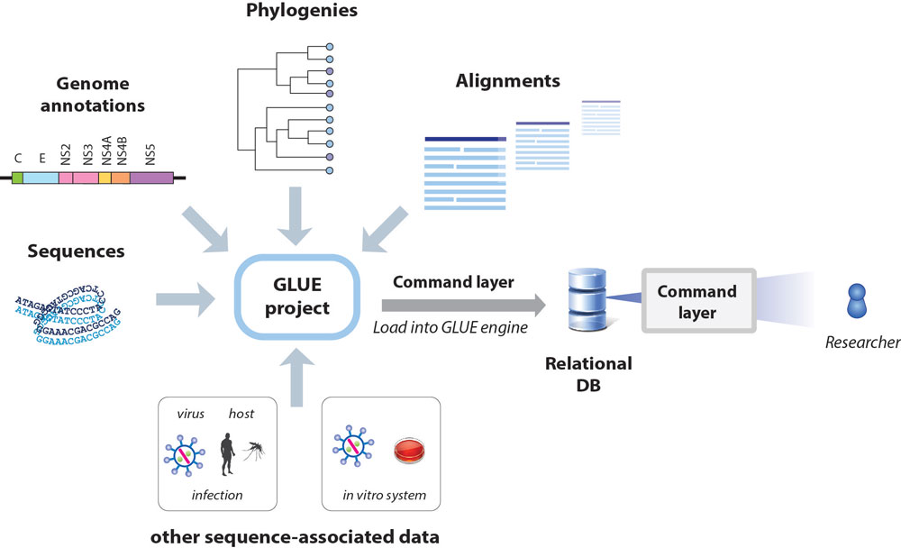
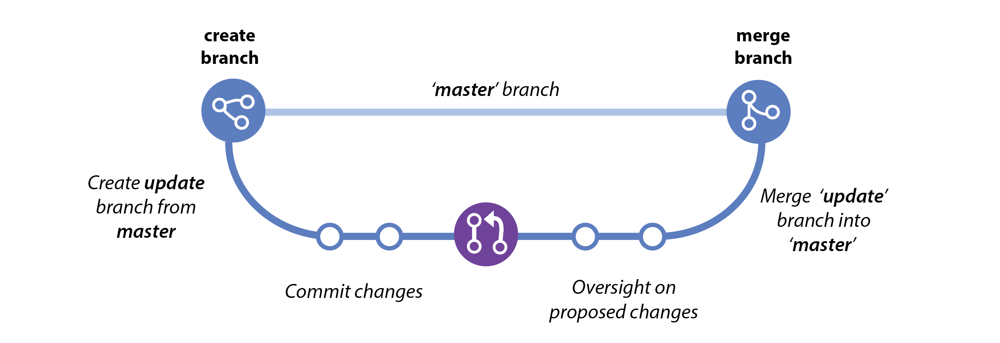

Overview
The flaviviruses (family Flaviviridae) are a group of enveloped, positive-strand RNA viruses, many of which pose serious risks to human health on a global scale. This is Flavivirus-GLUE, a GLUE project designed to support comparative genomic and evolutionary analysis of flaviviruses (family Flaviviridae). Flavivirus-GLUE contains aligned, annotated genome sequence data for flaviviruses and endogenous viral elements (EVEs) derived from flaviviruses.
Yellow fever - caused by a mosquito-borne flavivirus - has been known since the 17th Century, when it became known as 'Yellow Jack'. Modern studies of flaviruses began nearly a century ago with the discovery that this disease is caused by a filterable agent and transmitted to humans by mosquitoes. The story of how Sir Walter Reed (pictured) and the U.S. Yellow Fever Commission proved that mosquitoes transmit yellow fever was portrayed in a 1941 issue of 'True Comics'.
Understanding how pathogenic viruses evolved can provide vital insights into their biology. Genomic studies indicate that the flavivirus family has arisen through an extended history of evolutionary interaction with host and vector species, thus comparative studies can productively utilise genomic data to reveal insights into flavivirus biology.
What is a GLUE project?
GLUE is an open, integrated software toolkit that provides functionality for storage and interpretation of sequence data. It supports the development of “projects” containing the data items required for comparative genomic analysis (e.g. sequences, multiple sequence alignments, genome feature annotations, and other sequence-associated data).

Projects are loaded into the GLUE "engine", creating a relational database that represents the semantic relationships between data items. This provides a robust foundation for the implementation of systematic comparative analyses and the development of sequence-based resources. The database schema can be extended to accommodate the idiosyncrasies of different projects. GLUE provides a scripting layer (based on JavaScript) for developing custom analysis tools.

Hosting of GLUE projects in an online version control system (e.g. GitHub) provides a mechanism for their stable, collaborative development.

Some examples of 'sequence-based resources' built for viruses using GLUE include:
- COV-GLUE: A GLUE resource for tracking genetic variation in SARS-COV2. CoV-GLUE contains a database of amino acid replacements, insertions and deletions which have been observed in GISAID hCoV-19 sequences sampled from the pandemic
- RABV-GLUE: Tailored toward epidemiological tracking of rabies virus (RABV). Includes a database of RABV sequences and metadata from NCBI, updated daily and arranged into major and minor clades, and an analysis tool providing genotyping, analysis and visualisation of submitted FASTA sequences.
- HCV-GLUE: This GLUE resource aims to support analysis of drug resistance and vaccine escape in hepatitis C virus (HCV). A database of HCV sequences and metadata from NCBI, updated daily and arranged into clades (genotypes, subtypes). As well as pre-built multiple-sequence alignments of NCBI sequences, it includes an analysis tool providing genotyping, drug resistance analysis and visualisation of submitted FASTA sequences.
What does building the Flavivirus-GLUE project offer?
Flavivirus-GLUE offers a number of advantages for performing comparative sequence analysis of flaviviruses:
- Reproducibility. For many reasons, bioinformatics analyses are notoriously difficult to reproduce. The GLUE framework supports the implementation of fully reproducible comparative genomics through the introduction of data standards and the use of a relational database to capture the semantic links between data items.
- Reusable data objects and analysis logic. For many - if not most - comparative genomic analyses, data preparation is nine tenths of the battle. The GLUE framework has been designed to ensure that work spent preparing high-value data items such as multiple sequence alignments need only be performed once. Hosting of GLUE projects in an online version control system such as GitHub allows for collaborative management of important data items and community testing of hypotheses.
- Validation. Building GLUE projects entails mapping the semantic links between data items (e.g. sequences, tabular data, multiple sequence alignments). This process provides an opportunity for cross-validation, and thereby enforces a high level of data integrity.
- Standardisation of the genomic co-ordinate space. GLUE projects allow all sequences to utilise the coordinate space of a chosen reference sequence. Contingencies associated with insertions and deletions (indels) are handled in a systematic way.
- Predefined, fully annotated reference sequences: This project includes fully-annotated reference sequences for major lineages within the Hepadnaviridae family.
- Alignment trees: GLUE allows linking of alignments constructed at distinct taxonomic levels via an ""alignment tree" data structure. In the alignment tree, each alignment is constrained to a standard reference sequence, thus all multiple sequence alignments are linked to one another via a standardised coordinate system.
GLUE project
On computers with GLUE installed, the Flavivirus-GLUE project can be instantiated by navigating to the project folder, initiating GLUE, and issuing the following command in the GLUE shell:
Mode path: /
GLUE> run file flaviviridaeProject.glue
Contributors
Robert J. Gifford (robert.gifford@glasgow.ac.uk)
Rhys Parry
Connor Bamford
William Marciel de Souza
Related Publications
Bamford CGG, de Souza WM, Parry R and RJ Gifford
(2021)
Comparative analysis of genome-encoded viral sequences reveals the evolutionary history of the Flaviviridae.
preprint [view]
Singer JB, Thomson EC, McLauchlan J, Hughes J, and RJ Gifford
(2018)
GLUE: A flexible software system for virus sequence data.
BMC Bioinformatics
[view]
Zhu H, Dennis T, Hughes J, and RJ Gifford
(2018)
Database-integrated genome screening (DIGS): exploring genomes heuristically using sequence similarity search tools and a relational database.
[preprint]
License
This project is licensed under the GNU Affero General Public License v. 3.0.